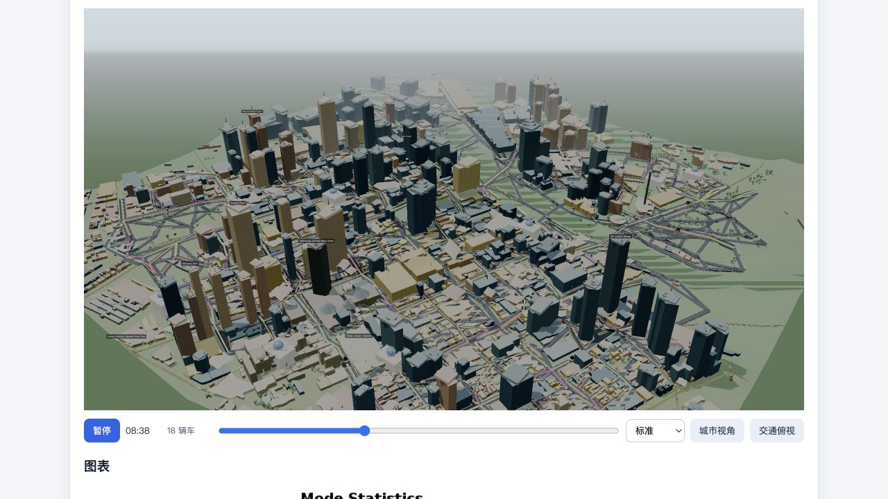

The engineering problem
A convincing map is not enough. Inputs must match the region, failures must remain visible, and each comparison needs the right population, scenario and run evidence.
Personal project · Python / Data engineering
A local pipeline that connects Melbourne transport data, MATSim simulation and evidence you can inspect.

A convincing map is not enough. Inputs must match the region, failures must remain visible, and each comparison needs the right population, scenario and run evidence.
The proposed alternative road did not improve mean car-trip time in the featured experiment. The workflow preserves that outcome and makes it reproducible.
01 / implementation
The Python integration layer coordinates existing simulation tools and records the evidence needed to interpret each run.
OSM roads and ABS/VISTA-derived inputs. Frozen synthetic plans; activity-domain checks.
Explicit image fingerprints. Named runs, seeds and logs. Durable job status.
Artifact checks and input hashes. Valid denominators. Controlled scenario analysis.
FastAPI, result catalogue, aggregate/paired workbench and Three.js replay.
Orchestration, input checks, job management, road-edit workflow, analysis, evidence records and browser integration. AI-assisted implementation and maintenance are disclosed.
MATSim supplies the Java simulation engine. Vendored Melbourne R workflows supply network and population generation. This is an integration project, with upstream notices retained.
02 / recorded experiment
Baseline → road closure → closure + 356 m alternative · fixed population · iterations 0–9
Closure − baseline · mean car-trip time
Alternative − closure · mean car-trip time
Bar scale: 0 to +10 seconds. Positive means slower. All seeds use the same 1,037 people.
| Seed | Baseline (s) | Closure (s) | Alternative (s) | Alternative − closure (s) |
|---|
934 recorded car trips per run; the exported evidence reports their valid/missing/invalid counts. Differences are descriptive, not confidence intervals, proof of convergence or observed city outcomes.
03 / reliability repair
A real summary defect became a regression case: a 90-second trip plus a missing observation had been reported as a 45-second mean.
Choose the second observation. The mean uses only finite, nonnegative measurements; zero is a valid observation.
Trip A: 90 seconds
Deterministic illustration of the documented policy. The Python regression suite executes the actual shared parser and downstream summary/comparison code.
Mean of valid observations
The missing row is counted, not converted to a zero-second trip.
04 / SQL investigation
Ten SQL queries connect the headline result to trip distributions, road usage and route costs.
Alternative minus closure. Faster ≤ −1 s; unchanged |delta| < 1 s; slower ≥ +1 s.
| Change | Trips | Total seconds |
|---|
Same trip keys; no mode switches in this case. Three seeds repeat the population and are reported separately. Q04 · inspect the aggregates
Same endpoints, direction 27931 → 29548. Static free-flow costs; bar scale 0–50 seconds.
The shortest network cost is unchanged after adding the road, in both directions. This supports low attractiveness between these endpoints; it is not a prediction of observed whole-trip time. Q09 · verify both directions
Only 0.64% of recorded car trips have a complete traversal of a new-road link in each seed. The previously closed-link users remain about 30–31 seconds slower than baseline. The evidence supports limited reach and low route attractiveness under this demand sample.
The mean alternative-minus-closure effect is only +0.098 s across seeds: no observed benefit, with no significance claim.
Keep the same junction and link splits, but disable the new corridor. Compare that control with closure and the full alternative. Then inspect the six users and the largest trip outlier before testing a predeclared parameter grid.
Observed road users are selected after the intervention. Their subgroup result is descriptive, not a causal treatment effect.
These are exported, reviewed SQL results. This page filters the saved aggregates; it does not execute a database in the browser. Native source records remain local. Query hashes, source hashes and all ten outputs.
05 / evaluated AI application
A local Qwen3 model routes questions into read-only tools. SQL and Python calculate; the model organizes reviewed explanations.
30 development questions + 20 reserved questions, frozen before the first holdout run. A same-author internal suite, with every failure retained. This is guarded-system accuracy, not raw-model accuracy or production reliability.
The deterministic baseline also passed the holdout. No numeric-accuracy advantage from AI was demonstrated.
Early structured-output versions passed only 13/30 and 14/30 development questions. Valid JSON still contained wrong seeds, units and scope.
Explicit parameters now bind the plan deterministically. Raw model plans and each correction remain visible. Explanations separate observations, hypotheses, limits and the next experiment.
Saved from real local-model evaluation. Selecting an example does not run AI.
Full values, run IDs, query/artifact hashes and model plans: recorded responses.
Question → model route → explicit parameter constraints.
Named SQL queries, metric definitions, valid denominators.
Verified facts and reviewed hypotheses, with evidence limits.
Run identity, units, source hashes, timings and raw plans.
The live assistant requires the local MATSim service and model. This offline showcase makes no network requests. No model weights or individual trip records are bundled. The model can query nine reviewed runs; it cannot redesign roads or start simulations.
06 / evidence & scope
Python integration, SQL data modelling, CTEs and window functions, paired experimentation, data-quality diagnosis, traceable reporting and evaluated LLM tool routing.
Observed-traffic calibration, production hosting, GTFS transit, real-world policy benefit, model training and unrestricted AI reasoning. Three seeds do not establish significance.
Release 2026.10-p2. The source package retains upstream notices and includes a SHA-256 file manifest. Contribution boundaries.